아래와 같이 $p.log API를 이용하여 기본 로그를 출력할 수 있습니다.
코드 0-1.로그 출력 예
$p.log( ":::: WebSquare ::::" );그림 1.기본 로그 출력
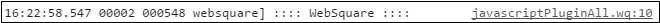
$p.log()함수를 이용한 로그는 다음과 같은 형태로 생성됩니다.
코드 0-2.로그 형태
시간 이전로그출력후경과시간 첫로그출력후경과시간 로그출력기] 로그메시지
코드 0-3.로그 예시
06:03:13.838 00032 013248 websquare] convertTypeB
위의 로그는 아래와 같이 해석할 수 있습니다.
항목 | 설명 |
|---|---|
06:03:13.838 | 로그생성시간 |
32ms | 이전로그출력 후 경과시간 |
13.248s | 첫로그출력 후 경과시간 |
websquare | 로그출력기 |
convertTypeB | 메시지 |
브라우저에서 console 객체를 지원해야 확인 가능합니다. 아래와 같이 console.log 메소드를 이용하십시오.
코드 0-4.로그 확인
console.log( ":::: Console Log ::::" );그림 2.브라우저 콘솔 로그
IE 지원
IE8 이상에서 지원됩니다.
브라우저 실행 후 [F12]를 누르거나 브라우저 메뉴를 통해 개발자 도구를 실행할 수 있습니다. 아래의 방법으로 브라우저에서 로그를 확인할 수 있습니다.
아래 경로에 있는 config.xml 파일을 엽니다.
파일 경로: /WebContent/websquare/config.xml
아래와 같이 설정하십시오.
<debug value="true" remoteConsole="false" console="true"/>
브라우저에서 F12 단축키를 누릅니다.
화면을 실행한 후 Console 탭을 선택합니다.
그림 3.로그 확인
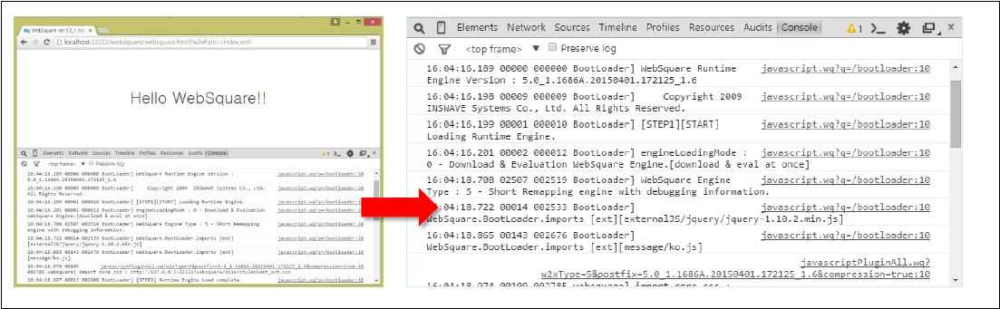
클라이언트 환경 설정을 통해 개발자 도구 Console 창에서 출력할 로그 타입을 지정할 수 있습니다. 스튜디오에서 client.config.xml 파일을 아래와 같이 설정하십시오.
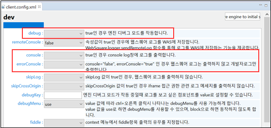
정상 로그와 오류 로그를 모두 출력 |
|
|---|---|
오류 로그만 출력 |
|
그림 4.YouTube 동영상 (https://youtu.be/uf6voVjDnRo)
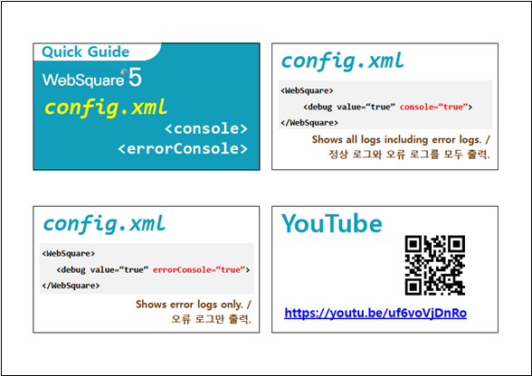
WebSquare5로 작성한 화면의 스크립트는 WebSquare5 엔진 위에서 실행됩니다. 화면 로그는 브라우저 경고 창으로 표현되지 않고 별도로 관리됩니다. 아래의 방법으로 로그 메시지를 확인하십시오.
WebSquare5로 작성한 화면을 브라우저에 실행합니다.
브라우저 상에서 [Ctrl+마우스 우클릭]합니다.
[로그보기]를 선택합니다.
그림 5.[Ctrl + 마우스 우클릭]
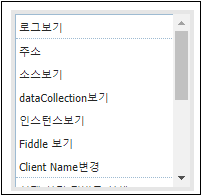
메뉴 | 설명 |
|---|---|
로그 보기 | Script 오류를 확인하거나 Script에서 출력한 로그를 확인. |
dataCollection 보기 | 데이터 객체의 현재 값을 확인. |
소스보기 | WebSquare화면 소스를 확인 |
현재 화면 디버그 실행 | Submission을 이용한 통신의 Input, Output, Header정보를 확인 |
전체 새로고침 | 이벤트가 발생한 위치와 관계 없이 최상위(top) 페이지를 SPA 방식으로 재로딩. |
새로고침 | Debug 메뉴 호출 이벤트가 발생한 위치의 페이지를 SPA 방식으로 재로딩. (URL 변경없이 body 및 script를 재로딩.) |
브라우저 상의 URL 재로딩 및 IFrame의 재로딩은 브라우저에서 제공하는 기능을 이용하십시오.
그림 6.YouTube 동영상 (https://youtu.be/l8O6aKN-NwQ)
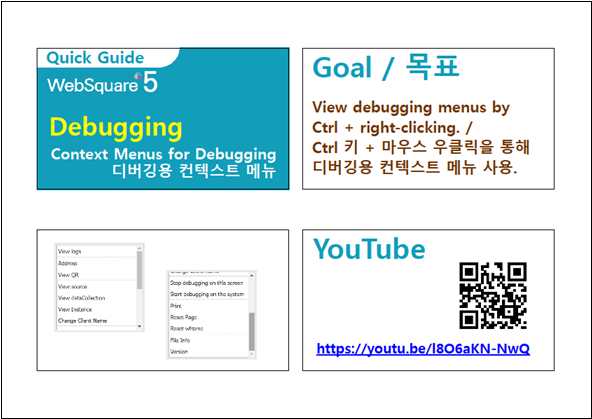
WebSquare.logger의 enableContextMenu() 및 disableContextMenu() 함수를 사용하여 디버깅용 컨텍스트 메뉴 사용을 허용하거나 차단할 수 있습니다.
코드 0-5.사용 예
// 디버깅용 컨텍스트 메뉴 허용 WebSquare.logger.disableContextMenu(); // 디버깅용 컨텍스트 메뉴 차단 WebSquare.logger.enableContextMenu();
위의 함수들은 config.xml 설정 파일의 <debugMenu> 항목의 설정 값에 상관 없이 사용할 있습니다. 즉, <debugMenu value="use"/> 혹은 <debugMenu value="block"/>으로 설정된 경우 모두 사용 가능합니다.
예제 파일
인터넷에서 다운로드 혹은
WEBSQUARE_DEV_PACK의 GUIDE 프로젝트에서 보기
(/WebSquare.logger/enableContextMenu_disableContextMenu_WebSquare_logger.xml)
그림 7.YouTube 동영상 (https://youtu.be/nGZQwuYFjkg)
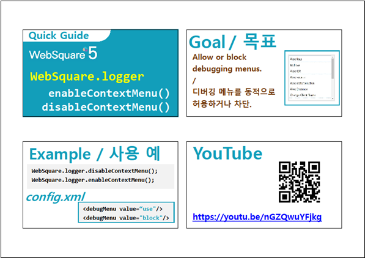
그림 8.로그 보기
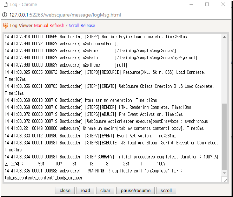
현재 컴포넌트와 바인딩된 DataCollection을 확인할 수 있습니다. 아래의 방법으로 실제 메모리에 할당된 데이터를 확인하십시오.
WebSquare5로 작성한 화면을 브라우저에 실행합니다.
브라우저 상에서 [Ctrl+마우스 우클릭]합니다.
[dataCollection 보기]를 선택합니다.
그림 9.Ctrl + 마우스 우클릭 시
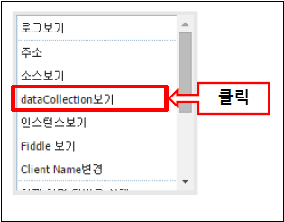
그림 10.현재 바인딩된 DataCollection 확인
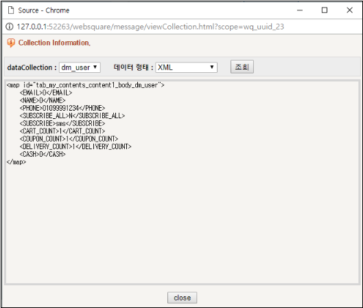
WebSquare5로 작성한 화면을 브라우저에 실행합니다.
브라우저 상에서 [Ctrl+마우스 우클릭]합니다.
[소스보기]를 선택합니다.
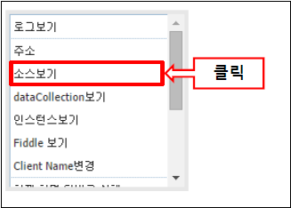
그림 11.소스 보기
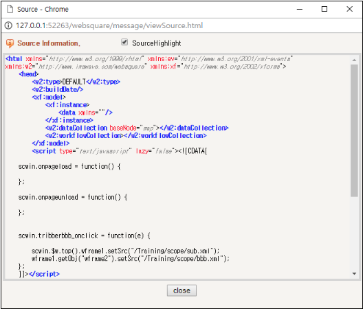
디버깅 메뉴 중 "현재 화면 이벤트 출력 실행" 및 "현재 화면 이벤트 출력 중단" 메뉴를 사용하면, 현재 화면에서 발생하는 이벤트 관련 로그들을 생성하거나 로그 생성을 중단할 수 있습니다. 이벤트와 바인딩된 컴포넌트, 스코프, 이벤트 이름, 이벤트 함수를 확인할 수 있습니다.
그림 12.디버깅 메뉴
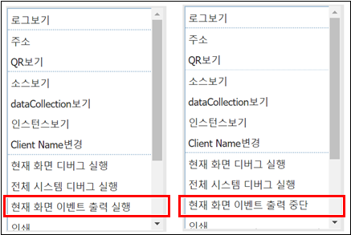
코드 0-6.로그 모양
[EVENT LOG] id: [trigger3] scope id: [] ev: [onclick] : ev name: [scwin.trigger3_onclick]
그림 13.YouTube 동영상 (https://youtu.be/bRAqROKjOew)
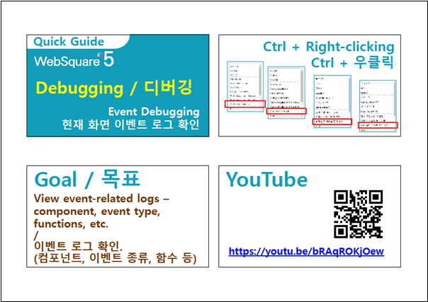
현재 화면에 포함된 Submission 객체를 확인할 수 있습니다. 또한, 현재 화면이 WFrame을 포함할 경우, WFrame의 src 화면에 포함된 submisison 객체를 함께 확인할 수도 있습니다.
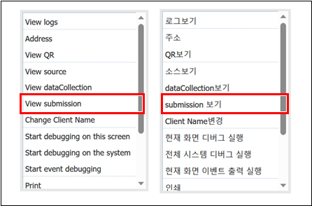
그림 14.현재 화면의 Submission 확인
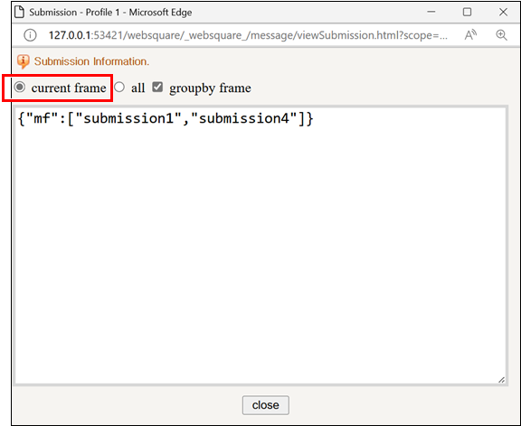
그림 15.화면에 포함된 WFrame의 Submssion을 포함한 전체 Submission 확인
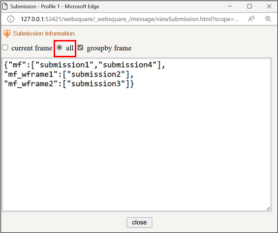
그림 16.YouTube 동영상 (https://youtu.be/wZQxvUCXKz0)
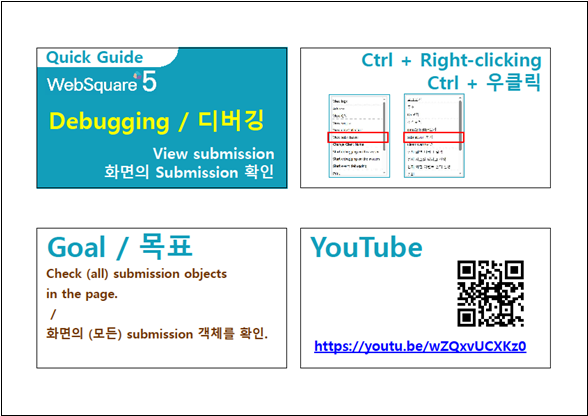
다음은 Chrome 브라우저에서 F12를 눌러 개발자 도구를 실행한 모습입니다. Source 탭에서 관련 파일을 확인할 수 있습니다.
그림 17.Chrome 개발자 도구
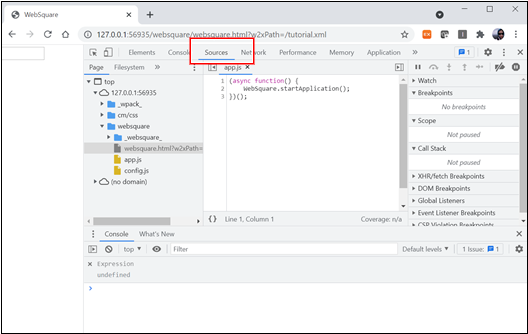
웹스퀘어5로 개발한 화면의 JS 파일은 _wpack_ 폴더 아래에 위치합니다. 화면에 해당하는 JS 파일을 선택한 후, 브레이크 포인트를 설정하여 개발자 도구에서 직접 디버깅을 수행할 수 있습니다.그림 18.개발자 도구에서 디버깅 수행
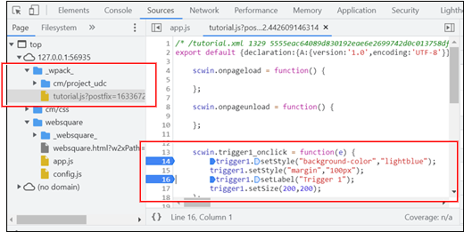